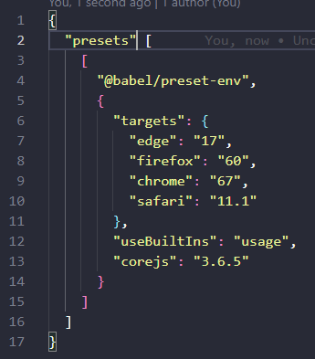

Mise en place du projet
Dans le Termianl : npm i -y
Dans le Terminal : npm i @babel/cli @babel/core @babel/preset-env babel-loader node-sass sass sass-loader
Crée un fichier "babel.config.js"
Crée un dossier src
Dans le dossier src crée un dossier js et un dossier sass
crée les fichier main.scss / index.scss / _variables.scss / _utils.scss / _reset.scss / _media-queries.scss / _classes.scss / _base.scss dans le dossier sass
Crée les fichier main.js et index.js dans le dossier js
Composition des différents fichiers
Package.json
Inséret ces script
"sass": "node-sass -w src/scss -o dist/css",
"babel": "babel src/js --out-dir dist/js"
babel.config.js
